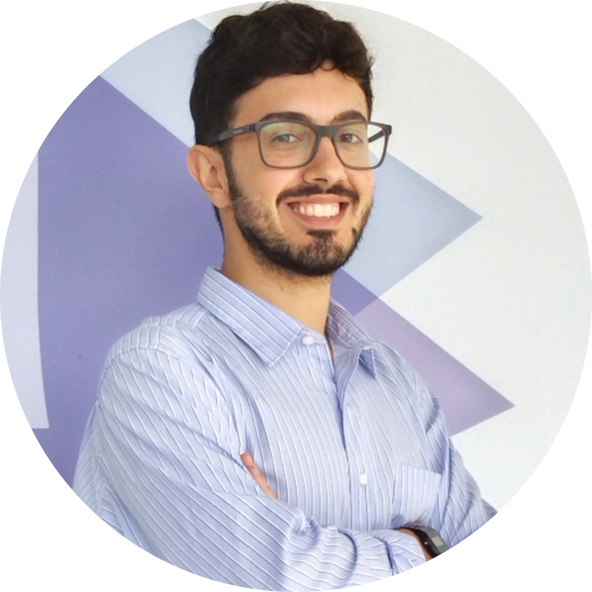

Gennaro Scarati
Robotics & AI Engineer
About Me
I'm a dedicated robotics engineer with a passion for developing cutting-edge autonomous systems and intelligent machines. My journey in robotics spans across multiple domains including perception, control systems, and AI integration.
With experience in both research and industry applications, I focus on creating practical solutions that make robotics more accessible and beneficial to society. From autonomous navigation systems to collaborative robots, I enjoy tackling complex challenges that push the boundaries of what's possible.
Technical Skills
Languages
Professional Experience
Robotics & AI Engineer
Eurecat
Jul 2023 – Present | Barcelona, Spain- Develop and deploy robotics and AI software modules for industrial and agricultural robots using C++, Python and ROS2.
- Train and implement learning-from-demonstration pipelines (VLAs, Diffusion Policies) for dexterous manipulation (fruit harvesting, industrial assembly).
- Reduced development time by 50% by adding custom task planning modules within behavior trees.
- Hands-on work with collaborative robots, drones, cameras and diverse mechatronic systems.
Key Technologies: C++, Python, ROS2, Docker, OpenCV, PyTorch, Linux, Git
Control Systems Engineer
Dumarey Softronix
Mar 2022 – Jul 2023 | Turin, Italy- Developed and maintained control systems for General Motors vehicles deployed on ~100,000 units in 2024.
- Improved fault diagnostics by ~50% using RNNs and model-based methods; reduced calibration effort by ~30%.
- Worked with cross-functional teams in Italy and the U.S. to meet milestones.
Key Technologies: C, Python, Git, MATLAB, Simulink, DOORS
Featured Projects
AI-based NLP Application for Education
Co-ideated and developed an NLP app that grew into a startup raising over €1.5M.
Education
Master’s Degree in Mechatronic Engineering
Politecnico di Torino
Sep 2019 – Dec 2021 | Turin, ItalyFinal grade: 110 with honours/110 (GPA: 4.0/4.0)
Bachelor's Degree in Mechanical Engineering
Politecnico di Torino
Sep 2016 – Sep 2019 | Turin, ItalyFinal grade: 110/110